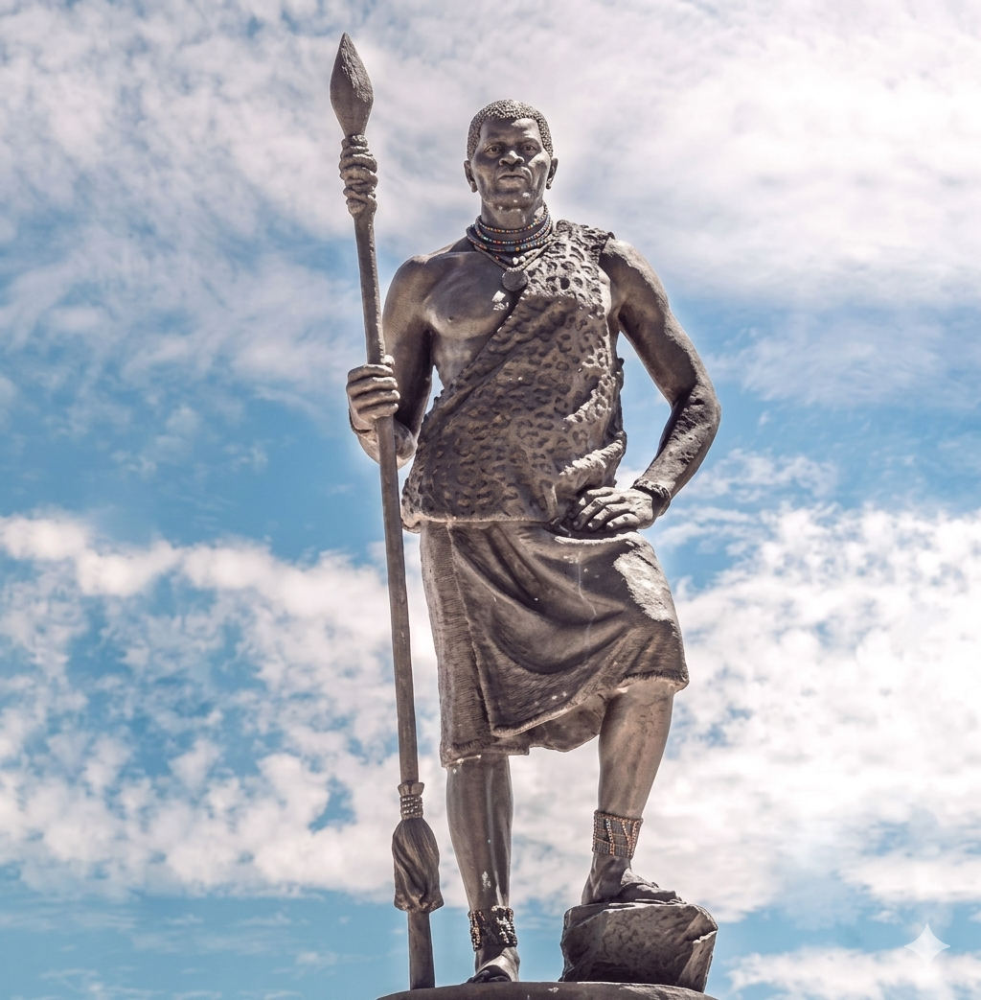
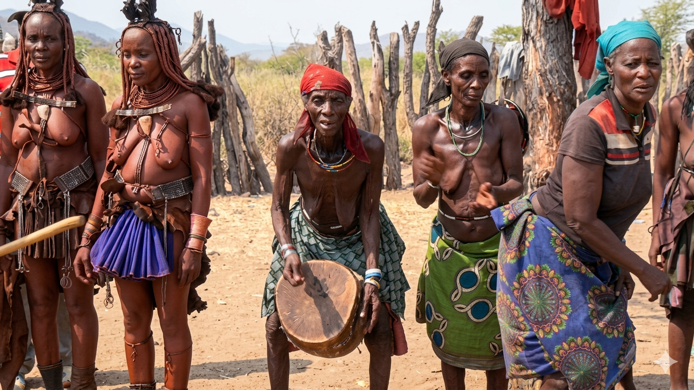
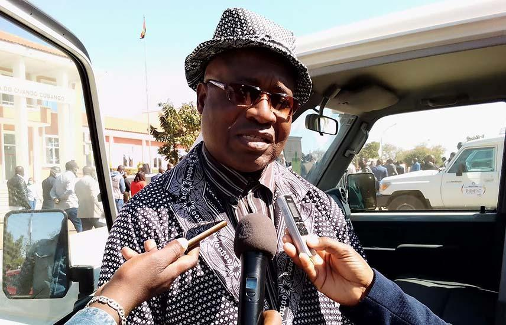
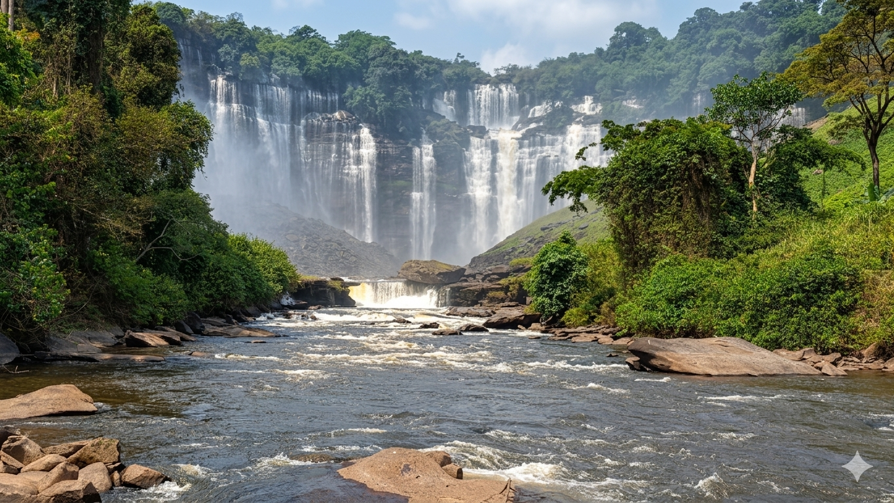

ABRIR LIVRO: HISTÓRIA E CULTURA NGANGUELA (PDF)
ABRIR LIVRO: HISTÓRIA E CULTURA NGANGUELA (PDF)
A Província do Cubango
O Cubango é uma das 21 províncias de Angola, localizada na região leste do país. Tem como capital a cidade e município de Menongue. Até 2024 conservou o nome de "Cuando-Cubango", quando parte de seu território foi cedido para formar a província de Cuando.
O território correspondente à então Província do Cuando Cubango era constituído por 9 municípios e 30 comunas, nos termos da Divisão Político-Administrativa definida pela Lei n.º 18/16. Com a implementação da nova Divisão Político-Administrativa, estabelecida pela Lei n.º 14/24, de 5 de Setembro, procedeu-se à reorganização territorial que resultou na segmentação da antiga Província do Cuando Cubango em duas novas províncias, designadamente a Província do Cubango, com sede em Menongue e a Província do Cuando, com sede em Mavinga.
Limitação Geográfica
É limitada a norte pelas províncias do Bié e Moxico, a leste pela província de Moxico e a província do Cuando, a sul pela República da Namíbia , a oeste pelas províncias do Cunene e Huíla.
Demografia e Divisão Político-Administrativa
No âmbito do processo de actualização cartográfica para o Recenseamento Geral da População e Habitação (RGPH) 2024, a Província do Cubango esta constituida por 11 municípios, 12 comunas, 1 099 bairros ou aldeias, estratificadas em áreas urbanas e rurais, tendo como referência a hierarquia da Divisão Político-Administrativa definida pela Lei n.º 14/24, de 5 de Setembro, conforme a tabela a seguir:
| Nº | MUNICÍPIO | COMUNAS | População (M) | População (F) | População (MF) |
|---|---|---|---|---|---|
| 1. | Caiundo | Caiundo e Jamba Cueio | 10 989 | 11 204 | 22 193 |
| 2. | Calai | Sede | 13 734 | 14 198 | 27 932 |
| 3. | Chinguanja | Sede | 3 627 | 3 599 | 7 226 |
| 4. | Cuangar | Sede | 6 252 | 6 429 | 12 681 |
| 5. | Cuchi | Sede | 14 926 | 15 305 | 30 231 |
| 6. | Cutato | Cutato e Vissati | 15 646 | 15 773 | 31 419 |
| 7. | Longa | Longa e, Baixo Longa | 14 043 | 13 971 | 28 014 |
| 8. | Mavengue | Mavengue e Maué | 1 324 | 1 141 | 2 465 |
| 9. | Menongue | Sede | 185 488 | 197 147 | 382 635 |
| 10. | Nancova | Nancova e Rito | 4 248 | 4 211 | 8 460 |
| 11. | Savate | Savate e Bondo Caíla | 8 424 | 8 767 | 17 192 |
| TOTAL | 278 701 | 291 746 | 570 447 | ||
Fonte: Resultados Definitivos do RGPH 2024 – Província do Cubango
Etnia e Identidade
A sua composição étnica básica foi estabelecida, embora de maneira preliminar, no fim da era colonial. Compõe-se majoritariamente dos grupos Ganguelas, Chócues e Xindongas, e minoritariamente de Ovambos e Coissãs (Kum e Tchum). Nos grandes centros urbanos provinciais há frações de migrantes de Hereros, Nhaneca-humbes, Ambundos e Ovimbundos, e de origens miscigenadas, como luso-angolanos.
Apesar de consistir de grupos relativamente pequenos e dispersos, com uma notável mobilidade geográfica (que inclui a Namíbia, o Botsuana e a Zâmbia), e a frequente junção ou divisão destes grupos. Estas características mantiveram-se desde antes da ocupação colonial e continuam depois do acesso de Angola à independência.


Representação da cultura e tradicional Nganguela
O Rei de Menongue
A região de Menongue tem uma história rica de liderança tradicional. O atual soberano é Sua Majestade o Rei Mwene Vunongue VIII, o guardião máximo das tradições, da cultura e do bem-estar do seu povo.

Sua Majestade, o Rei Mwene Vunongue VIII
Clima
Segundo a classificação climática de Köppen-Geiger, predomina no Cuando-Cubango o clima subtropical úmido (Cwa), enquanto o clima semiárido quente (BSh) é característico do extremo sul provincial.
Hidrografia
Os principais cursos d'água da província correm num sentido noroeste a sudeste baseando-se em duas principais bacias: a do Calaári, que têm como principal rio o Cubango, com afluentes importantes nos rios Cuchi, Cuebe, Cueio, Cuatir, Chissombo, Dungo, Cafuma, Caquene, Cafulo e Cuito; e a pequena fração da bacia do Cuvelai-Etosha, no sudoeste cubanguense, baseado principalmente no rio Cubati-Lupangue.
Outros importantes reservatórios de água são os lagos Uamba Fuca, Lupango, Chivalela, Muonga, Machive, Lituto, Chieque, Muchova, Bezi-Bezi, Dinde, Caonda e Vinjunda, além de uma miríade de menores lagos e lagoas das planícies da bacia do Zambeze, ao leste.

Biodiversidade e natureza de Menongue
Economia (Agropecuária e Extrativismo)
Do seu “Modus Vivendi” destaca-se o comércio organizado no século XIX e XX, feito, essencialmente, à base de cera, mel, marfim e outros bens transaccionáveis. Estes povos de Angola são ainda caracterizados pela tradição na agricultura e pela pecuária, sobretudo a ré-colecção e criação de pequenos animais.
A província cubanguense produz para subsistência e para excedente, em lavoura temporária, o milho, o massango, a massambala, o feijão, a mandioca, amendoim, a batata doce, a cana-de-açúcar, a soja, o tabaco, o trigo, o vielo e as hortícolas. Já nas lavouras permanentes, encontra-se registo do café.
A pesca artesanal é outro meio de sustento, sendo realizada largamente no rio Cubango, e nos rios Cuito, Cuanavale, Longa, Cuatir e Cuando. O excedente da pesca é vendido majoritariamente para a Namíbia. No extrativismo vegetal, a província é a grande produtora e exportadora nacional de recursos madeireiros.
Na criação de animais, para carne, leite e peles, existem consideráveis rebanhos de pecuária de bovinos e de caprinos. Há também criação de galináceos para carne e ovos. Os rebanhos são destaque no município de Longa.
Indústria e Mineração
O grande parque industrial provincial está concentrado nas áreas próximas da cidade de Menongue, trabalhando com o beneficiamento agroindustrial de carnes e derivados de leites, além do semi-beneficiamento de frutas, ovos, óleos e produtos da terra. Outros itens produzidos são bebidas e alimentos secos, além de materiais de construção.
A extração mineral industrial encontra relevo no ouro, no cobre e no minério de ferro (particularmente no Cutato). Neste último mineral extraído, há o beneficiamento siderúrgico para produção de ferro-gusa em Cuchi.
História
A existência dos Ganguelas ou Nganguela começou a ser conhecida pelos europeus já no século XVII, por um duplo envolvimento nas redes comerciais desenvolvidas por estes no tráfico de escravos, a partir das províncias de Luanda e Benguela. Distinguem-se também pela identidade social e as respectivas línguas em relação aos povos vizinhos, como por exemplo os Chókwé, os Lundas e os Ovimbundus.
Tradição e Cultura
A Puberdade (Kucho)
Um dos aspectos marcantes da cultura dos Vaganguelas é a puberdade, chamada de Kucho, período em que a mulher é isolada da família, depois do 1º ciclo menstrual. Durante o período de isolamento, a jovem mulher aprende todos os hábitos e costumes da região, como cuidar do lar, como receber a família e os visitantes.
Conforme a tradição, quando a jovem estiver no período menstrual, não pode confeccionar alimentos para os homens, sendo que naquele período é isolada e substituída temporariamente nas tarefas por outra que não esteja na mesma condição.
Tradição dos Kum e Tchum (Koisans)
De acordo com o historiador Luís Paulo Vinsunjo, no primeiro ciclo menstrual a mulher também fica isolada numa casota previamente construída. O marido deve cantar à volta do espaço e buscar alimentos como mel, carne e frutos silvestres. A água provém de uma raiz denominada “Tum” usada em tempo de seca.
Na tradição dos Kum, o homem conquista a mulher de um modo muito particular. Num jogo de toca no ombro da menina não comprometida em volta da fogueira, ela sai a correr. Se voltar ao ponto de partida, a resposta é não. Se simular que tropeçou e cair, a resposta é sim.
O Alambamento
Actualmente, registam-se alterações na matriz do alabamento. No passado, os Ovangaguela casavam-se apenas entre eles. Em certas épocas, a mulher recebia uma enxada e dois rolos pequenos de tabaco. Havia também as ocupações de barriga (acordos entre pais durante a gestação).
Luís Visunjo lamenta o facto de a globalização ter rompido fronteiras, citando exigências actuais entre 50 a 150 mil kwanzas, além de bebidas industriais.
A Circuncisão (Lusumba)
A matriz na circuncisão provém da tradição Ovanganguelas realizada em ambos os sexos, a partir dos cinco anos de idade. Os meninos são levados para o Lusumba (acantonados). Antigamente utilizava-se a mesma faca sem anestesia; hoje o processo é mais cuidadoso.
Após o corte, o menino é levado ao Vamba (cabana para Tundandas), onde ensina-se como comportar-se dentro de um lar, preparar lavras e viver na comunidade. O regresso é festivo (Okulundulula Otudanda) com figuras mascaradas como o palhaço Mbwangungu, pai de todas as crianças.
Monumentos e Sítios
A província tem 58 lugares registados, destacando-se:
- Campo de Repressão Colonial do Missombo (cadeia do Missombo)
- Forte Serpa Pinto (Forte de Menongue)
- Tumpo e a Pirâmide
- Museu à Céu Aberto
Paisagens: Quedas do Tchitchalala (Cutato), Makulugungu (Vissati), e o memorial de 31 de Outubro de 1914.
Gastronomia
Prato forte: Funge de milho (Menongue, Cuchi, Caiundo, Cuangar) e funge de bombó, massango e massambala no leste. Destaque para o Mundjungu (kizaca escorregadia afrodisíaca), o Usse (Usongo), o tortulho e o kamiongo.